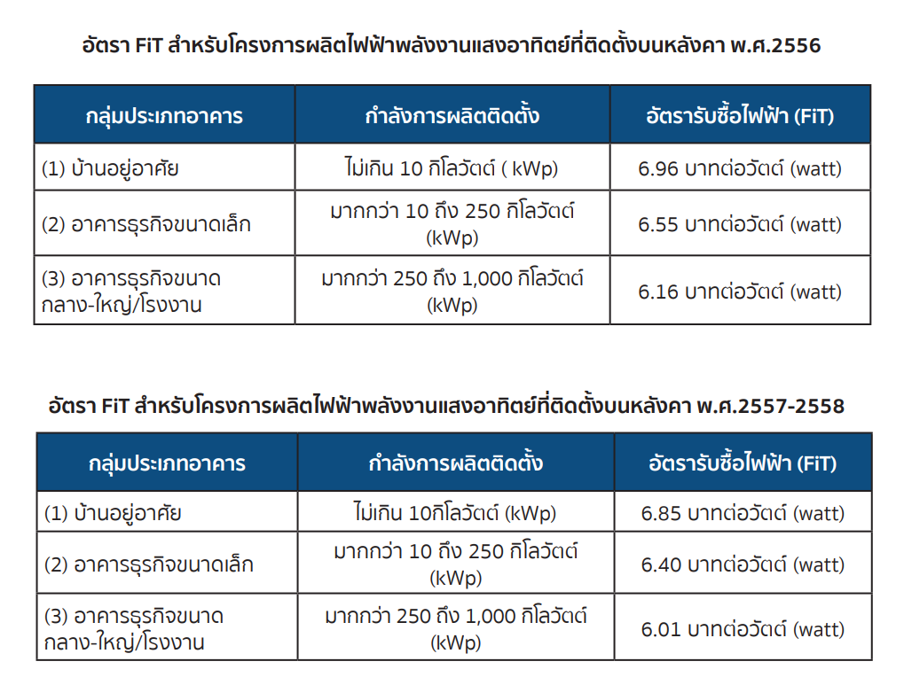

Solar Rooftop
ผ่านระบบโซลาร์รูฟท็อปในประเทศไทย ผลประโยชน์ที่ได้รับจากการใช้โซลาร์เซลล์ โครงการผลิตไฟฟ้าจากพลังงานแสงอาทิตย์
แบบติดตั้งบนหลังคา ปัญหากลุ่มครัวเรือนที่อาจพบเจอ ผลประโยชน์ที่คาดว่าจะได้รับ
หากดำเนินการตามแผนได้ใน 3 ปี การลดการใช้, การใช้ซ้ำ, การรีไซเคิล
ทำไมต้องใช้ โซลาร์เซลล์ ?
อันเนื่องมาจากสารกึ่งตัวนำที่นำมาผลิตโซลาร์เซลล์คือ ซิลิคอน ซึ่งถลุงมาจากทราย
และเป็นธาตุที่มีมากที่สุดในโลก อุปกรณ์ที่ผลิตด้วยสารกึ่งตัวนำยังมีราคาถูกและจะราคาถูกลงอีก
หากตลาดมีการขยายตัวมากขึ้น
ลดการปล่อยก๊าซคาร์บอนไดออกไซด์
การผลิตไฟฟ้าด้วยแผงโซลาร์เซลล์นั้นจะสามารถช่วยลดการปล่อยก๊าซคาร์บอนไดออกไซด์
ที่ส่งผลต่อวิกฤตการเปลี่ยนแปลงทางสภาพอากาศ
Solar Calculator
ขนาด (กิโลวัตต์)
จำนวน (แผง)
ต้นทุน: 0
ประหยัด: 0
พัฒนาการของการผลิตไฟฟ้า พลังงานแสงอาทิตย์ที่ติดตั้ง บนหลังคา (Solar PV Rooftop) ในประเทศไทย
ตั้งแต่ช่วงปี2530 ประเทศไทยได้มีการนำระบบผลิตไฟฟ้าพลังงานจากแสงอาทิตย์มาใช้งานเพื่อนำมาเป็นแหล่งพลังงานให้แก่พื้นที่ห่างไกลให้มีน้ำใช้ทั้งทางอุปโภคและเกษตรกรรม
และมีไฟฟ้าเป็นแสงสว่างในเวลาค่ำคืน ต่อมารัฐบาลจึงได้มีมาตรการส่งเสริมการผลิตไฟฟ้าจากพลังงานหมุนเวียนมากขึ้น
โครงการผลิตไฟฟ้าจากพลังงานแสง อาทิตย์แบบติดตั้งบนหลังคาด้วยอัตรา FiT พ.ศ. 2556

โครงการนำร่อง (Pilot Project) การ ผลิตไฟฟ้าพลังงานแสงอาทิตย์บนหลังคาอย่างเสรี พ.ศ.2559
เป็นการส่งเสริมการติดตั้งโซลาร์รูฟท็อปอย่างเสรีสำหรับบ้านและอาคารเป็นหลัก โดยมีหลักการคือไม่รับซื้อไฟฟ้าส่วนเกิน ที่ไหลย้อนเข้าระบบสายจำหน่าย
และมีการยกเว้นค่าธรรมเนียมในการตรวจสอบเพื่อเป็นแรงจูงใจให้ผู้สนใจเข้าร่วมโครงการมากขึ้น
ปัญหาของกลุ่มครัวเรือนที่ติดตั้งโซลาร์เซลล์ไว้ใช้เอง
ไฟฟ้าพลังงานแสงอาทิตย์ที่ผลิตได้จากโซลาร์รูฟท็อปอาจมากกว่าปริมาณการใช้ ไฟฟ้าในครัวเรือน เช่น ช่วงไปทำงานนอกบ้านในกลางวัน ทำให้มิเตอร์เกิดการหมุนย้อนกลับ และทำให้ตัวเลขมิเตอร์น้อยลง ส่งผลให้ค่าไฟฟ้าต่ำลงกว่าปกติ หากการไฟฟ้าตรวจพบ จะทำการแก้ไขด้วยการ ติดตั้งเครื่องป้องกันการหมุนย้อนกลับของมิเตอร์หรือเปลี่ยนเป็นมิเตอร์แบบดิจิตอล ซึ่งทำให้ผู้ที่ติดตั้งมิเตอร์ต้องเสียค่าใช้จ่ายเพิ่มเติมในส่วนนี้
ผลประโยชน์ทางสังคมและสิ่งแวดล้อมที่คาดว่าจะได้รับ
ทำให้เกิดการจ้างงาน ไม่ว่าจะเป็นวิศวกร คนงานติดตั้ง รวมทั้งพนักงานที่จะคอยดูแลรักษา
ส่งผลให้มีเม็ดเงินหมุนเวียนเข้าสู่ระบบเศรษฐกิจ
ผลประโยชน์ทางสิ่งแวดล้อม
ช่วยลดการผลิตไฟฟ้าจากโรงงานก๊าซธรรมชาติ(เช่นอุตสาหกรรมถ่านหิน)
และยังช่วยลดการปล่อยก๊าซเรือนกระจกได้ถึง 1.48 ล้านตันต่อปี
แนวทางการจัดการแผงโซลาร์เซลล์ตลอดอายุการใช้งาน
โดยการที่เพิ่มประสิทธิภาพในการทำงานของแผงโซลาร์เซลล์เพื่อให้สามารถใช้งานได้ยาวนานยิ่งขึ้น
การใช้ซ้ำ(Reuse)
ถึงแม้ว่าหลังจาก 25-30 ปี แผงโซลาร์เซลล์จะมีประสิทธิภาพในการทำงานลดน้อยลง แต่ก็ยังสามารถนำกลับมาใช้งานซ้ำตามจุดประสงค์ เช่น นำมาใช้งานสำหรับผลิตไฟฟ้า
ให้กับเครื่องสูบน้ำเพื่อนำมาใช้งานทางการเกษตร เป็นต้น
การรีไซเคิล(Recycle)
เราสามารถนำแผงโซลาร์เซลล์เข้าสู่กระบวนการรีไซเคิลเพื่อนำวัสดุ เช่น กระจก อลูมิเนียม ทองแดง กลับมาใช้งานใหม่ได้ ในอัตราประมาณ 85% ของวัสดุทั้งหมด